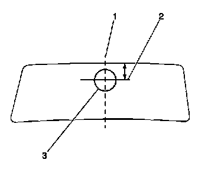
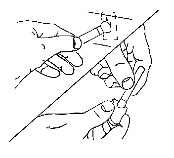

Rearview Mirror Support Installation
Rearview Mirror Support Installation
Tools Required
* Inside Mirror Adhesive Kit GM P/N 1052369 (Canadian P/N 993362) or Equivalent
* Safety Razor or Utility Knife
1. Determine the location of the mirror mounting base by marking the outside of the windshield with a wax pencil where the base was previously located. If it is not clear where the base was located, use the following steps to determine where the base should be installed:

1. Using a measuring tape, measure the distance between the windshield pillars at the windshield blackout line.
2. Using a marking pencil, halfway between the windshield pillars, draw a centerline (1) on the windshield from the roof panel to the windshield base.
3. Draw a perpendicular line intersecting the centerline (2) at that location.
The bottom center of the mirror mounting base will be at the intersection of these lines.
2. Scrape the inside windshield glass thoroughly with a safety razor or utility knife in order to remove all old adhesive.
3. If reinstalling the original mounting base, place the mirror mounting base in a suitable holding device, such as a vice.
4. Scrape the mirror mounting base thoroughly with a safety razor or utility knife in order to remove all old adhesive.
5. Clean the inside windshield glass and the mounting surface of the mirror mounting base thoroughly with a clean cloth saturated with naphtha or a 50/50 mixture by volume of clean water and isopropyl alcohol.

6. Apply a small amount of activator to the mounting surface of the mirror mounting base.
7. Apply a small amount of activator to the windshield where the mounting base is to be installed.
8. Allow the activator to dry 5 minutes.
Important: Do not touch the mounting surface of the mirror mounting base or the glass.
9. Apply 1 drop of adhesive to the center of the mirror mounting base.

10. Immediately apply the mounting base to the windshield, ensuring that the mounting base aligns correctly to the marks made on the outside of the windshield.
11. Hold the mounting base firmly in place for 1 minute.
12. Allow the adhesive to set for 15 minutes before installing the rearview mirror.
13. Clean the wax pencil lines from the exterior surface of the glass.
14. Install the mirror to the mirror mounting base. Refer to Inside Rearview Mirror Replacement (UE1) (Inside Rearview Mirror Replacement (UE1))Inside Rearview Mirror Replacement (DD7, DD8) (Inside Rearview Mirror Replacement (DD7, DD8)) .